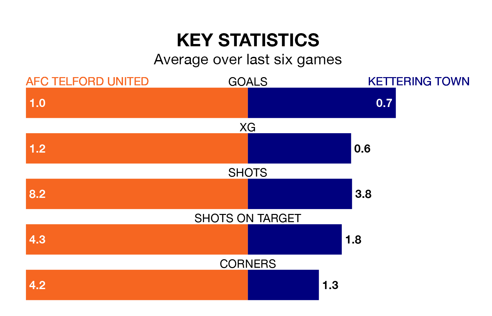

AFC Telford United are heavy favourites to keep all three points at home in Saturday's kick-off against Kettering Town.
The Bucks, who sit sixth in the Southern League Premier Central with 28 games played, are priced at 1.4 to seal victory at the New Bucks Head Ground.
Sitting 14 places and 19 points behind them in the table, Kettering are 6.0 to win with *Betting Company*, while the draw is at 4.0.
In the last 10 years, Telford United and Kettering have played each other on nine occasions. Telford United won two of them, Kettering three, and they drew four times.
On average, the Bucks scored 1.4 goals and the Poppies 1.4 in those matches.
Their last meeting was on October 31, when Telford United won 3-1 away.
Telford United are in mixed form in the Southern League Premier Central, with two wins and three draws from their last six games.
With a win and a draw over that period, Kettering's form is worse – they have taken four points from 18, compared to the Bucks's nine.
With 35 goals in 27 games so far this season, Town are scoring at below the league average rate with 1.3 goals per game. And they are conceding more than average, letting in 56 goals at a rate of 2.1 per game.
The home team are also below average scorers, with 1.4 goals per game, compared to a league average of 1.5. They have conceded 0.9 goals per game.
Telford United's last match was on Tuesday, a 2-2 draw against Royston Town.
Kettering lost 3-1 against Long Eaton United last time out, on February 3.
Updated: 11:18 (UTC), 08/02/24